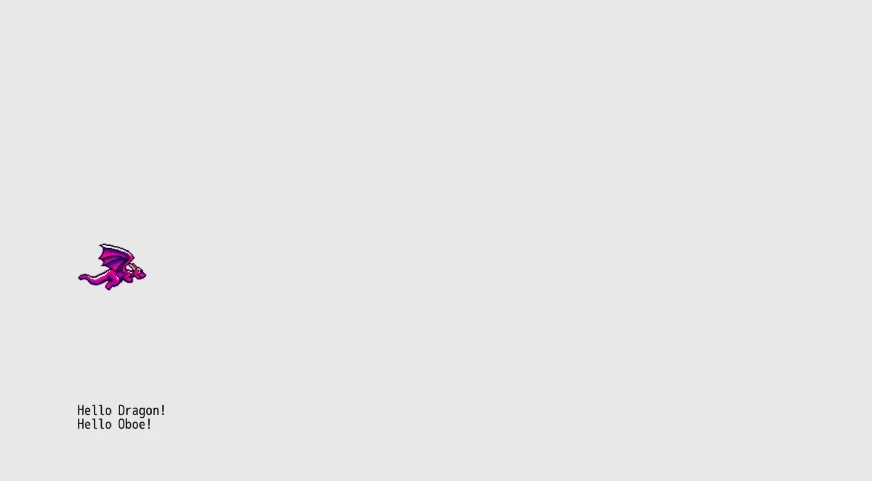
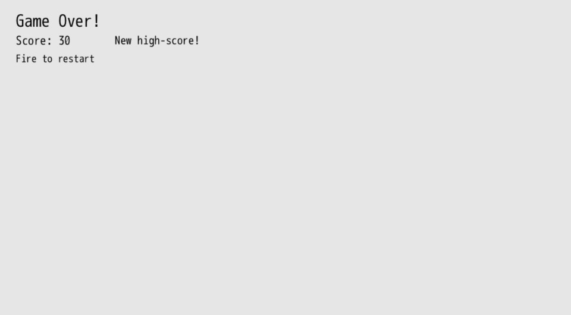
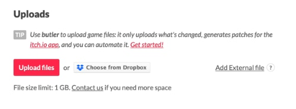
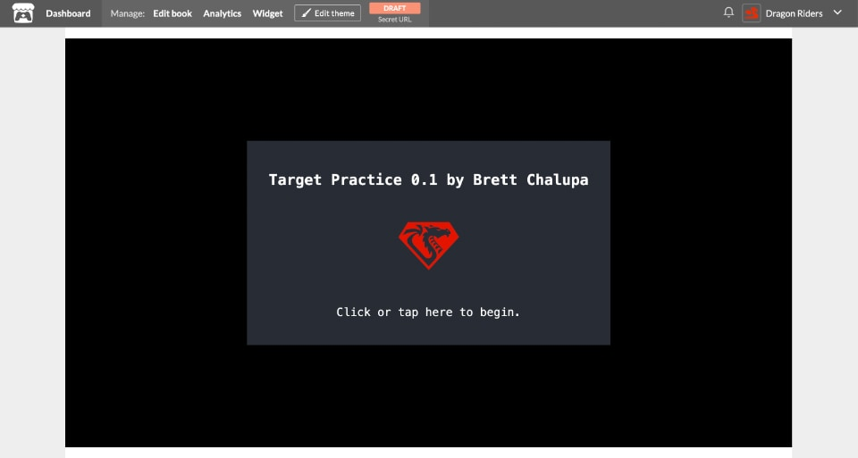

Introduction

üöß Building Games with DragonRuby is a work in progress. Expect typos, issues, and incompleteness. üöß
This book is aimed at new game developers who are interested in learning to code and build games. If you've written code before, especially Ruby, then you'll have a bit of a headstart. But the concepts in this book are beginner friendly. Whether you're new to game dev or just DragonRuby Game Toolkit, you'll have made a finished game by the end of this.
You need no prior experience with programming or game making to follow this book.
Why Learn How to Make Games
Making games is a total blast. It's challenging but rewarding. They're the sum total of so many creative mediums, plus they're interactive. You'll learn so many different skills by making games:
- Programming and logic
- Rendering images
- Responding to input
- Game design
- Interactive design
- Working with image files
- Editing audio files
- Distributing the game software to users
- Getting feedback from your game and iterating
About DragonRuby Game Toolkit
DragonRuby Game Toolkit (DRGTK) is a cross-platform game engine for building 2D games. It lets you write games in Ruby, a wonderfully expressive and approachable language. It allows game developers to quickly iterate on their games and ship them to any modern platform.
DRGTK is not a no-code engine. You'll write the code that your game runs. This may seem scary at first, but it's a lot of fun and really powerful. Making games is also a great way to learn how to code! Don't know Ruby? That's okay, this book will teach you what you need to know.
But it isn't free!
DRGTK costs money, yes. And there are plenty of free game engines out there. But the DRGTK team is committed to sustainably working on the engine and making it the best it can be, which means they need to get paid for their work. Support small teams by buying their software, it shows you're interested and it helps them keep doing what they love.
You're investing in the engine and ecosystem, quite literally, by buying DRGTK. I want to see it succeed, so I bought a license. I want to see it succeed so badly I've written this book to try to help you make games with it.
Plus, if you're a student or in need of financial assistance, the DragonRuby team offers free licenses. Get in touch with the team to get a free license.
There's also a free, interactive environment you can use to sample DragonRuby GTK. Give it a try and see what you think!
Why DragonRuby Toolkit
There are more game engines, frameworks, and libraries than I can count on my hands and toes. So why should you use DragonRuby?
That's a legit question. Here are my reasons why:
- It's focused on 2D games, so there's no competing interests in how the tooling works. It means what you need to know is pretty simple and easy to remember.
- It allows building games for all modern platforms, from desktop computers to the web to mobile devices to consoles. It's truly cross-platform and just works, which is amazing.
- It's fast a heck, which is important for making quality games.
- It makes use of Ruby, which is a wonderfully productive programming language.
- It doesn't force you to use a specific editor or tooling.
- It's lightweight to run the engine, which is great. Everything runs fast.
- It has live-reload and no compile times, which means when you change your game code, it automatically refreshes in the running engine. This is honestly so amazing, that you wouldn't know it unless you've used other game engines that require you to start a new build with each change.
I'm going to be honest, DRGTK might not be for you. If you want to make 3D games, look elsewhere. Although, if you're new to game development, I wouldn't recommend starting with a 3D game. If you're absolutely not willing to try coding, look elsewhere.
But for everyone else, I think DRGTK will knock your socks off (or at least shift them down a little).
Mindset
When learning something new, especially something that's challenging, it's important to have the right mindset.
- Be curious: it's the best way to learn!
- Be patient: learning is difficult, but stick with it
- Be kind: to yourself and others
When we learn how to play a new instrument, we learn the basics by covering simplistic pieces of music. Similarly, we're going to "cover" simpler game mechanics to get you started. Before long, you'll grasp the basics and be able to move onto more complex games and mechanics.
Start by making small games that you can finish in a couple of days. Make a lot of small games to learn quickly. Don't get too wrapped up in your dream idea or making something that gets on Steam. Definitely don't try to make an MMORPG. Instead, focus on shipping your small games.
What's shipping? Isn't that when you want Mulder and Scully to kiss? No! Get your head out of the gutter you alien-loving freak. (I want to believe! üõ∏) Shipping is when you 1. finish your game and 2. release it for people to play it.
So here's your mindset, really, boiled down: make a small game and ship it for free, then make another small game and ship it for free. Before long, you'll be building a visual novel where Mulder and Scully kiss and be swimming in a pool of cryptocoins! But seriously, what that mindset will do is help you grow as a developer, build an audience, and get your shipping muscle primed and ready for making a better game with each one.
What We'll Be Making
Throughout the book, we'll be building a simple shoot-'em-up where you pilot a dragon. You'll learn all of the foundation aspects of making a game:
- The game loop
- Rendering text
- Rendering sprites and animating them
- Handling input
- Enemies and AI
- Playing sound effects and music
- Polishing your game
- Shipping it!
TODO: playable demo link
Hold the Gosh Dang Phone
"Who the heck are you?" you might be shouting at your screen. Little ole me? I'm just the voice of the dragon that lives within all beings! No, no, I kid. I'm Brett! I'm a programmer who enjoys making games and sharing what I've learned along the way.

That's-a-me! If I was a bunch of pixels I guess.
I love Ruby. I've been writing it for over 12 years, and it's such a joy. I also love games. Particularly 2D games. So here we are. ‚ù§Ô∏èüíé + üéÆ = üìï How's that for an equation?!
I don't know, you want me to be serious about why you should listen to me? Oh you skipped this section, okay fine. Wow, did you drop that banana peel there? You trying to take me out already? This early in the book? Well, I'll see you in the next chapter! We'll see who gets the last laugh.
Why the Book is Free
When I was 16, I took a computer science class in high school. It was my first exposure to programming with a language more complex than HTML and CSS. We programmed in Java. My teacher had us print out our assignments for grading (for some odd reason).
That class was foundational in the course my life would take in the 14 years since. At age 16 I was an emo kid who loved video games. Imagine a swoopy haired teen in their bedroom listening to Bright Eyes while playing Final Fantasy XII. That was me.
So naturally, for my final project in that high school computer science class I made a game. You pilot a Moltres from Pokemon who shots fire balls at Zaku mechs from Gundam that fly across the screen. If you get hit by an enemy, it's game over. If you defeat all of the enemies, you win. This game was lovingly titled Zaku Space Battle.

In order to make that game, I followed a free online tutorial that laid out the foundations of making a game with Java. There was no way I would have figured out on my own how to make a game at that point without help from a free online tutorial. I had so much fun making that final project that I went to college to study game programming and do programming for my career. I took what I learned in that tutorial, expanded the functionality, and made it my own (with copyright sprites, but still!).
This book is freely accessible so that someone who loves games and wants to try making them can do so. Free programming resources have truly shaped my life and career. I wouldn't have the life and career I have now without them. So I want to give back and try to help other aspiring developers.
You'll learn the foundations of game programming and making games, as well as some more advanced topics. If this book can help even just one person start and finish a game, it's worth every minute I've spent on it. We'll make a game not too dissimilar from Zaku Space Battle. Once you finish it, take what you've learned and make it your own!
If you want to, you can send me a tip as a way of saying thank you. It's much appreciated.
Contribute
This book is open source. That means anyone can view the code that builds it and contribute toward making better. Did you find something that doesn't work, a typo, or lacks clarity? Submit an issue or contribute on GitHub. It's easy, and you can do it right from your browser. Thanks in advance!
If you're stuck and would like some extra assistance, reach out in the DragonRuby Discord. We'll get you unstuck!
Get Started
All right, are you ready to make a game? Let's get started!
Hello Dragon!
We'll start by rendering an image and some simple text on the screen. But first, we need to get our computer and DragonRuby Game Toolkit ready for developing.
First Steps
- Download a code editor: Since you'll be coding your game, you need a special text editor to let you write the code without any extra formatting that text editors like Microsoft Word add. Visual Studio Code is a great free editor. Download and install it. (Or use your own favorite editor.)
- Get DragonRuby GTK: You need to get a copy of DragonRuby GTK so you can use the engine. Buy it on Itch and download the zip file for your operating system.
- Extract the DRGTK engine zip: In your computer's file explorer, extract the engine zip file.
You're ready to work on your game. Let's get to it!
ProTip: don't delete the zip file! You can unzip it again for when you start working on your next game. It's helpful to keep it around.
What's in the Engine Zip
When you download DragonRuby Game Toolkit, it contains everything you need to build your game. There's no external dependencies to install or monkey with. You just use the provided files and start making your game.
Let's go over the key files in the archive you just extracted:
dragonruby‚Äî the executable you'll run to launch your game in development mode, you're primary entry into the development flowdragonruby-publish‚Äî a command-line tool to help you easily build and publish your game online, don't worry about this yet!samples/‚Äî a folder of example code that you can run if you'd like, or just ignore it for nowdocs/‚Äî the DragonRuby Game Toolkit docs for the version you've downloaded, extremely handy if you want to dive deeper than this bookmygame/üåü ‚Äî as the name implies, this is where the code, graphics, sound, and other assets live for your game; this is the primary folder you'll be working inapp/‚Äî this is where your Ruby code goesmain.rb‚Äî this is the main file for your game code, don't worry about the other two yet
data/— where you can put any data for your game, like level editor filesfonts/— where fonts go, duh!metadata/— configuration files for your game, we'll do more here latersounds/— where music and sound effects gosprites/— where images go that will be rendered in the game; there are already some simple ones to work with by default
Don't worry about the other files yet. Focus on the mygame/ directory, and, specifically, mygame/app/main.rb.
Start the Game
Launch the dragonruby file.
If you're on MacOS, right-click the file and select "Open". You'll need to ensure software from unverified sources can be installed.
Here's what gets displayed:

This isn't a game... yet! But it is doing three key things:
- Launching an app window
- Rendering text
- Displaying an image
And you haven't even written any code yet. Not a bad starting place.
DRGTK handles the unfun stuff of making games—dealing with low-level APIs like graphics, window, and sounds. We can instead focus on making our game.
An Overview of the Main Game File
Let's take a look at what's in mygame/app/main.rb:
def tick args
args.outputs.labels << [640, 500, 'Hello World!', 5, 1]
args.outputs.labels << [640, 460, 'Go to docs/docs.html and read it!', 5, 1]
args.outputs.labels << [640, 420, 'Join the Discord! https://discord.dragonruby.org', 5, 1]
args.outputs.sprites << [576, 280, 128, 101, 'dragonruby.png']
end
You can open this file yourself in Visual Studio Code. Go ahead and do that: New Window > Open > [select the folder on your computer with the engine in it]
Six lines of codes to render text and an image? Not bad! (Trust me, if you did this all from scratch without an engine, it'd take at least hundreds of lines of code.)
Here's what that code does, line by line:
def tick args
This defines a method called tick and passes in an argument called args. Methods are reusable pieces of code that you can call to do something over and over again. Think of methods like verbs; they're actions. Methods are a foundational building block of code that allow for code reuse.
Let's say you wanted to give a friend a cookie üç™, you'd define a method called give_cookie and pass in the friend as a parameter.
def give_cookie(friend)
friend.eat(:cookie)
end
You'd then call that method like:
francis = Friend.new
give_cookie(francis)
Wait, how'd we get talking about cookies and friends? Okay, back to the code above.
args is a bunch of data that gets passed into tick whenver it is called. We'll learn more about args soon.
The next three lines handle outputting text to the screen:
args.outputs.labels << [640, 500, 'Hello World!', 5, 1]
args.outputs.labels << [640, 460, 'Go to docs/docs.html and read it!', 5, 1]
args.outputs.labels << [640, 420, 'Join the Discord! https://discord.dragonruby.org', 5, 1]
Your eyes might be melting a little bit. But don't worry, wipe that melted bit of eye away and focus! It's actually pretty intuitive once you get the hang of it.
Remember args from above? That parameter that's passed into tick? Well, you can call methods on it! This allows you to interact with the game engine.
args has a method called outputs that represents the data that gets rendered in the screen. You access it with args.outputs. Neato! labels is a method on outputs, see how the . chains things together?
The << is called the shovel operator. It lets you push data into a collection. labels is the collection we're shoveling data into because we want to render some text.
And then finally the code within the brackets [] is an array of data that represents what we want to display on the screen. It may not be clear exactly what it's doing yet, but it'll become more clear over time.
[TODO: array illustration]
You can see some code in quotes, those are strings. And they're what's being displayed by the game. In order to show the text, though, we need to tell the engine where to place it on the screen. That's what the first two elements of the array do: they specify the x and y position in of the text in the game. Then there's the text we want to render. That's followed by the size. Then finally the alignment (centered in this case).
Here's it broken down:
# x, y, text, size, alignment
[640, 500, 'Hello World!', 5, 1]
Don't worry about memorizing what the positional elements of the array mean. This is just a quick way to render text. We'll start using a more friendly approach soon enough. The sample game does this three times, thus rendering three difference pieces of text. The y coordinate is different for each, stacking them on top of each other vertically instead of overlapping one another.
Gosh enough of this rambling, let's adjust some code. Change the text from "Hello World!" to be "Hello Dragon!" and save the file.

Did you see that? The game reloaded your code and changed the text to be "Hello Dragon!" That was quick, wasn't it? That's one of the best parts of DRGTK—live reloading of your game code in the engine. This allows you to make changes to your game quickly, reducing the time between the cycles of writing your code and testing it.
args.outputs.sprites << [576, 280, 128, 101, 'dragonruby.png']
args.outputs.sprites is like labels, but it's instead a collection for sprites. It renders the "dragonruby.png" image at x: 576, y: 280, just like label text, but it also sets the size of the image to display. That's what the 128 and 101 represent in the array. Here's a break down of those elements:
# x, y, w, h, image
[576, 280, 128, 101, 'dragonruby.png']
Just like with labels, don't worry about memorizing the order here. There are friendlier ways to display them that we'll get to shortly.
But it's an easy enough bit of code for putting an image on the screen.
Dragon sprite created by Nick Culbertson.
Finally, the last line:
end
signifies that the definition of the tick method is over. Any code after that isn't part of the tick method. That's it for what we get out of the box.
Screen Coordinates Explained
Let's take a detour down Screen Coordinates Road. The x and y position are coordinates on the two-dimensional plane of the game window. Remember geometry? I barely do. But this is important, so don't doze off on me yet, we're only in the first chapter still!
[TODO: coordinates illustration]
DRGTK games are made up of a window that's 1280x720 pixels large. That's 1280 pixels wide and 720 pixels tall. The rectangle of the game screen is 921600 pixels, that's those two numbers multiplied. Each of those pixels has a coordinate on the plane. It makes it easy to refer to a specific pixel by using its x and y position.
DRGTK starts 0, 0 in the lower left. So 1280, 720 would be the upper right. Note: this varies from most game engines and libraries and tools, but it's intentional to make it easier to think about gravity and the geometric 2D plane that is taught in mathematics.
It's important to keep coordinates in mind, as we'll be using them a lot when making our game. A major aspect of games is moving things on the screen, which we do by changing their coordinates on the plane.
Our Own Hello
Back to making the game. Okay, yeah, you changed a string and it changed what was rendered. That's neat. But let's bump it up a notch.
I want you to delete the code in mygame/app/main.rb. Select it all and delete it. Yup, I know, the blank canvas is a challenge. But you need to start writing the code yourself in order to learn and build the muscle memory. So go ahead and type out each line below into your main.rb.
[TODO: hand-write it, don't copy it illustration]
def tick args
args.outputs.labels << [120, 120, "Hello Dragon!"]
end
You know what that does, right? Well you saw it automatically reload in your game, so of course you do!
Let's greet our friend Oboe too.
def tick args
args.outputs.labels << [120, 120, "Hello Dragon!"]
args.outputs.labels << [120, 100, "Hello Oboe!"]
end
Wow, so many friends we're saying hello to! The thing is... that code is a bit... duplicative. Let's write our own method to clean that up:
def greet friend
"Hello #{friend}!"
end
def tick args
args.outputs.labels << [120, 120, greet("Dragon")]
args.outputs.labels << [120, 100, greet("Oboe")]
end
The new code refactors (changes the implementation of the code without changing the behavior) the original so that we can easily change the greeting in one place instead of many. This is a bit of a trivial example, but it shows how we can write our own methods in DRGTK to make our code better. Reusing code is foundational for the rest of this book.
The "Hello #{friend}!" code does what's called string interpolation. It takes whatever friend is, hopefully a name as a string, and inserts it. It's pretty similar to this code: "Hello " + friend + "!", but quite a bit friendlier to use. The #{} tells Ruby to run any Ruby code within those curly braces.
Methods in Ruby return a value. Return values can then be used by the caller for whatever purposes are needed. In the example above, the return value is the string we build. Ruby returns the last line of the method definition automatically. But you can explicitly return early with return, which can be useful if you want to end the execution of a method early.
Go ahead and change the #greet method to:
def greet friend
"Hello #{friend}!"
1
end
Whoa! What happened to our greetings? Well, we changed our code and it now always returns 1, which isn't what we want. It's just an example to illustrate how that works. Go ahead and undo that change.
Let's do one final thing in our hand-crafted, artisinal version of rendering text and images. Let's display a sprite. In mygame/sprites/misc/ there's a file named dragon-0.png. It's a pixel art dragon made by Nick Culbertson that's free to use. Pretty neat!
def greet friend
"Hello #{friend}!"
end
def tick args
args.outputs.labels << [120, 120, greet("Dragon")]
args.outputs.labels << [120, 100, greet("Oboe")]
# Here's our new line
args.outputs.sprites << [120, 280, 100, 80, 'sprites/misc/dragon-0.png']
end

That's some pretty fine code for the first chapter. We've got text and an image displaying. We learned about methods too. Don't worry if it's not all making total and complete sense. You'll understand more with time. Remember, be patient.
Game Loop Explained
There's a lot of magic happening where we can just write def tick and magically have a game. What's happening here is that DragonRuby Game Toolkit takes the code in mygame/app/main.rb, find the tick method, and then runs a loop that calls it 60 times every second until the program closes. This loop is referred to as the Game Loop.
When programming games, any number of things are happening at one time. Enemies are moving, images are being displayed, math is being calculated, input is being handled. The loop runs over and over again, accounting for any changes in the state of the game. This is similar to how screens on devices work—they refresh so many times a second, so fast that it's barely perceptible to the human eye.
Within the game loop, we'll keep track of everything that's happening, update state, and render text and images. It's important to begin to think about things in a loop, as it influences timing and code structure.
[TODO: drawing of the game loop and why it matters]
The game loop will begin to feel more natural over time, but for now, remember this: DRGTK runs the tick method 60 times every second.
What's Next
Let's get the player dragon moving around on the screen when we press certain keys. Player input is foundational to making games and a great next step.
Player Movement
In the last chapter, we got a dragon sprite showing up on the screen and some text. Let's build upon that by making it so we can control the dragon with our keyboard and a gamepad. Because guess what? That dragon is now the main character of this game we're building. üêâ Buckle up, it's dragon riding time.
Simplify mygame/app/main.rb to be just this for now:
def tick args
args.outputs.sprites << [120, 280, 100, 80, 'sprites/misc/dragon-0.png']
end
That displays our player dragon and nothing else. Excellent. Let's get this dragon moving!
In order to handle moving the player, we need to keep track of the position across the game loops. This lets us know where the player was last tick, check if they should move, and then update the position accordingly.
Update your mygame/app/main.rb to be this:
def tick args
args.state.player_x ||= 120
args.state.player_y ||= 280
args.outputs.sprites << [args.state.player_x, args.state.player_y, 100, 80, 'sprites/misc/dragon-0.png']
end
There are a couple of new things here:
args.state||=
Let's start with args.state. It's basically a blob that can be anything you want it to be, a bit like Kirby. Feed it player_x and it keeps track of it. Whatever you feed the args.state, it'll be accessible in future ticks. Keeping track of game state across ticks is important! It's part of the game loop. If we don't know where the player last was, how can we calculate where they should move to? We need to keep track of it in someplace. args.state is a fine place to start.
You can define anything on args.state, so it's up to you to use useful names. You could make args.state.bleh and set it to your favorite color, args.state.bleh = "blue" or your age, args.state.age = 30. Much like Kirby, args.state doesn't care what you feed it. It's just hungry for your data.
In this case, we're feeding it ||= 120. What the heck is ||=? Well... Maybe we need to start with =. You might read that as "equals" but it's actually the assignment operator. It means: set the thing on the left to the value on the right. It's a core programming concept. It's useful for assigning data to properties that we want to keep track of.
name = "Francis"
That code assigns the string Francis to the variable name. Then we can use name to refer to that value. It may not seem useful quite yet, but it will soon enough.
You could then use that variable like this:
puts name
That calls a the puts method and passes our argument name to it. It prints whatever the value is out to the console. If you put that in your game code and press ~ to open the console, you'll see it print "Francis" a bunch.
||= in English is "or equals". That code above, args.state.player_x ||= 120 would be read as: assign the property player_x on args.state the numeric value of 120 unless it's alreay assigned a value.
Remember how tick is running once every 60 seconds? We don't want to always set args.state.player_x to 120. We just want to set it to that initially and then we'll update that value when we press keys on our keyboard or buttons on our gamepad. We haven't done that yet, but that's what's next.
Wow! That was a lot of explaination for two measly lines of code. But I'm telling ya', they're two really important lines of code when it comes to game programming.
Then, finally, we change the x and y value for the dragon sprite to be the value stored in args.state so that we can actually make use of that value instead of our hard-coded position before.
Checking for Input
In tick we'll check to see if a given input is pressed. If it is, we'll change the sprite's x and y position accordingly.
Our ole buddy args has a little something known as args.inputs. This lets us check... inputs! Isn't programming nice? Most of the time the words used in programming make sense. But some of the time, they really don't, and it's a gosh dang nightmare. But let's commit right here, right now to trying to name things in a way that's useful. Okay, you're committed. When you name a method def thingy, you'll remember this. And your ears will ring a little bit and your eyes will get just a little dry and you'll remember that you broke this commitment.
Let's make use of args.inputs:
def tick args
args.state.player_x ||= 120
args.state.player_y ||= 280
if args.inputs.left
args.state.player_x -= 10
elsif args.inputs.right
args.state.player_x += 10
end
if args.inputs.up
args.state.player_y += 10
elsif args.inputs.down
args.state.player_y -= 10
end
args.outputs.sprites << [args.state.player_x, args.state.player_y, 100, 80, 'sprites/misc/dragon-0.png']
end
You can now control the dragon with WASD, the arrow keys, or your controller. Pretty neat! It's almost fun. All it took was 10 lines of code. Let's break them down.
if args.inputs.left
args.state.player_x -= 10
elsif args.inputs.right
args.state.player_x += 10
end
This section checks for horizontal movement. If the left input is pressed, reduce the player's x position by 10 pixels. -= means, subtract the value on the right from the value on the left. It's the same as args.state.player_x = args.state.player_x - 10, but it's much more concise. We increase player_x to move right, decrease it to move left.
if and elsif are conditional checks. The code only runs if the value is true (more specifically, truthy, but let's not worry about that yet).
if args.inputs.up
args.state.player_y += 10
elsif args.inputs.down
args.state.player_y -= 10
end
Then we check for vertical movement. We add to player_y to move up, decrease it to move down.
What if we wanted our dragon to move faster though? We could change those four instances of 10 to be 12 and see how that feels, sure. But that's annoying to update it all over. Let's make use of a variable! We'll call it speed:
def tick args
args.state.player_x ||= 120
args.state.player_y ||= 280
speed = 10
if args.inputs.left
args.state.player_x -= speed
elsif args.inputs.right
args.state.player_x += speed
end
if args.inputs.up
args.state.player_y += speed
elsif args.inputs.down
args.state.player_y -= speed
end
args.outputs.sprites << [args.state.player_x, args.state.player_y, 100, 80, 'sprites/misc/dragon-0.png']
end
Whoa! We just refactored that code. It's easier to change (ETC) now, which is a sign we're improving things.
Boundaries
You can move your dragon completely off the screen, lost in the great unknown! This isn't ideal. Let's make it so our little buddy can't leave the bounds of the screen.
[TODO: drawing about boundaries]
def tick args
args.state.player_x ||= 120
args.state.player_y ||= 280
speed = 12
player_w = 100
player_h = 80
if args.inputs.left
args.state.player_x -= speed
elsif args.inputs.right
args.state.player_x += speed
end
if args.inputs.up
args.state.player_y += speed
elsif args.inputs.down
args.state.player_y -= speed
end
if args.state.player_x + player_w > args.grid.w
args.state.player_x = args.grid.w - player_w
end
if args.state.player_x < 0
args.state.player_x = 0
end
if args.state.player_y + player_h > args.grid.h
args.state.player_y = args.grid.h - player_h
end
if args.state.player_y < 0
args.state.player_y = 0
end
args.outputs.sprites << [args.state.player_x, args.state.player_y, player_w, player_h, 'sprites/misc/dragon-0.png']
end
Our dragon won't leave the screen. Woot woot! We've got some serious code here! Look at that logic. Here's what changed:
We moved the width and height of the player into variables so that they're easier to reference and reuse. Boom. We need those to do some math on the boundaries too. There's a general programming idea out there known as Don't Repeat Yourself (DRY). As soon as you have a piece of code, especially a number, that represents a value and is used multiple times, put it in a variable. This makes its intent clear as to what it represents and makes it easier to change. Win-win.
Here's the good stuff. We check the boundary for the x axis:
if args.state.player_x + player_w > args.grid.w
args.state.player_x = args.grid.w - player_w
end
if args.state.player_x < 0
args.state.player_x = 0
end
We check the right side of the screen: if the current player's x position plus their width is greater than args.grid.w, then we set the x position to the width of the screen (args.grid.w) minus the width of the sprite. For example, if we move the sprite so it has the x position of 1284, 4 pixels past the right edge of the screen, we override that change and set it to 1280 minus the player's width.
It's so important that this happens after checking for input. You don't want to change args.state.player_x after this check, otherwise the boundary won't be enforced. Order matters with the code we write within tick.
args.grid.w is the width of the screen. It's always 1280, but we don't want to have that magic number in our code. So we use args.grid.w.
Next we check the left side of the screen: if the player's x is less than 0, then we set it to zero. That's a bit similar to the right side, just simpler.
Then we do the same thing for the top and bottom of the screen by checking the y position.
Extra Credit
- When you move the dragon horizontally and vertically at the same time, the dragon moves twice as fast. How could you make it so the dragon moves at a uniform speed still when that happens?
What's Next
In the next chapter we'll make our dragon spit fireballs when we press a key or button. Watch out!
Spit Fire
Our next mission is to make our dragon spit fire because that's just what they do. We'll piece this whole thing into a game with win and lose states, a narrative, and intentional design soon enough. But let's keep focusing on simple mechanics and the code for right now.
Fire on Input
In the last chapter, we used args.inputs to check for player input from the four main directions. If those inputs were being pressed, then we moved the dragon. Now let's check to see if the Z key is pressed to know when to have our dragon spit a fireball.
To check if a key was pressed, we can use args.inputs.keyboard.key_down and then whatever key we want to check. So in our case, we'll check args.inputs.keyboard.key_down.z. In our #tick method, right above where we render the dragon sprite, let's check for that input:
if args.inputs.keyboard.key_down.z
puts "Z key pressed"
end
args.outputs.sprites << [args.state.player_x, args.state.player_y, player_w, player_h, 'sprites/misc/dragon-0.png']
Using puts is a really helpful way to check that our game works as we expect it to. In this case, every tick where the Z key is pressed down, it prints the string "Z key pressed" to the console (open it iwth ~, remember?). Run your game and press the Z key a bunch and then open your console.

Expanded Control Support
When making a game, it's important to support a variety of input configurations to make the game as accessible as possible. Sure, the keyboard arrow keys and the Z key are sensible defaults. But what if our player wants to use a gamepad controller? Or what if they would prefer to use WASD for movement? From the start of coding player input, let's support as many different inputs as reasonably possible.
In our case, we'll support three configurations:
- Arrow keys and Z
- WASD and J
- Gamepad
DragonRuby GTK is a big help in this department. Our code earily that checks args.inputs.up (down/left/right) already checks for the arrow keys, WASD, and gamepad input. Slick! We don't have to change anything there. But let's go ahead and update our logic check for firing the fireball to check all of the possible inputs.
if args.inputs.keyboard.key_down.z ||
args.inputs.keyboard.key_down.j ||
args.inputs.controller_one.key_down.a
puts "Spit fireball!"
end
We learned about ||= earlier, and that's a combination of two separate operators in Ruby. || represents "or" and = says to assign a value. If the value on the left doesn't have a value, assign it the value on the right. We can make use of the "or" (||) operator independently of the assignment operator (=) to control the logic within our game.
The code above says: if the z key is down OR the j key is down OR the A button on the gamepad is pressed, then output the string to the console.
You can combine || on one line (if monday || tuesday || wednesday), but it can be helpful to break long lines to make our code easier to read.
Outputting info to the console isn't that helpful for the player, but can you begin to imagine how we'll use that check to instead display a fireball.
Displaying Fireballs
We want to display a fireball on the screen when the action key is pressed. We've got most of the code, all we need to do is change puts to instead display the fireball.
At the top of #tick (#name is Ruby shorthand for "the name method"), assign an empty array to args.state.fireballs if nothing has been assigned yet. This will let us keep track of fireballs across the game loop to do all sorts of things with them (display them, move them, collide them with other objects):
def tick args
args.state.player_x ||= 120
args.state.player_y ||= 280
args.state.fireballs ||= []
Then where we check for the action input, push a fireball into the arg.state.fireballs array based on the current player's x and y position:
if args.inputs.keyboard.key_down.z ||
args.inputs.keyboard.key_down.j ||
args.inputs.controller_one.key_down.a
args.state.fireballs << [args.state.player_x, args.state.player_y, 'fireball']
end
args.outputs.labels << args.state.fireballs
Then all we have to do is render our fireballs by pushing them into the args.outputs.labels collection. DragonRuby is smart enough to know that if we push an array into any args.outputs collection it'll flatten it and display them correctly. Thanks, DragonRuby!
Play your game and see what happens! Fireballs everywhere. Wait! You're not impressed by those fireballs? I'd be pretty frightened if the word fireball was flying at me.

Wait, where are you going? Why are you muttering "I didn't sign up to read no stinkin' book where you output the word fireball on the screen, I'm here for the real flame, the good stuff..."
Moving Fireballs
Guess what? We're sticking with ole "fireball" for now! It's silly and fun and I haven't found a good fireball sprite to use. We'll get there, we'll get there. But let's first make the fireballs move across the screen.
When we moved our player dragon, we took the x and y position and added or substracted values in each #tick based upon if any directional input was pressed. Our fireballs will move regardless of any button pressed once they're extruded from our ole dragon's mouth. Because our game is simple and the dragon only faces to the right, all of the fireballs will move to the right. How do we go about that on our X-Y axis? We just increase the x position of the fireball each tick. Let's do that and see what happens:
if args.inputs.keyboard.key_down.z ||
args.inputs.keyboard.key_down.j ||
args.inputs.controller_one.key_down.a
args.state.fireballs << [args.state.player_x, args.state.player_y, 'fireball']
end
args.state.fireballs.each do |fireball|
fireball[0] += speed + 2
end
args.outputs.labels << args.state.fireballs
Right between where we add a new fireball to args.state.fireballs and we display them using args.outputs.labels, our new code does this:
- Loop through the array of
args.state.fireballs - For each fireball, update the array value at the
0index, which is the x position of the fireball, to be the dragon's speed plus 2 (because we want the fireball to move faster than the dragon).
Move your dragon around, spit some fire, and bask in the glory of a word moving so smoothly across the screen that it almost looks like a... fireball!
Try changing around speed + 2 to make the fireballs move faster or slower and see how that feels. Adjusting speed values can really change the vibe of your game and is important in tuning it to feel just right.
There's a lot of important concepts in those three newly added lines of code. In Ruby, when there's an array of data, we can loop through each item and modify their properties. Games are composed of huge collections of things: enemies, fireballs, menu options, player inventory. Arrays (and just collections in general) aren't anything to be afraid of, and soon enough, you'll be thinking about your games in them.
Looping through an array of data in each #tick and then doing something is the stuff games are made of! Here are some ways this can be applied in all sorts of games: enemy behavior, checking for collision, animating. As our game (and any game you make) gets more complex, looping through collections of data becomes more and more common.
[TODO: illustration of game loop and then a little loop inside where we loop through collections]
Switching to Hashes
So far throughout the book we've been using arrays to represent the entities in our game, whether it be the player's dragon sprite or our fireball text that gets displayed. Remember [args.state.player_x, args.state.player_y, 'fireball']? Arrays are wonderful and important, but they aren't so great for representing structured data because it's difficult to remember what each piece of data in the array's positions represents. Remembering that fireball[2] is the text value and not the y value is tricky. Luckily, DragonRuby has a more verbose and clear data structure we can use for managing our data. It's called a hash! Much like arrays, hashes are extremely useful.
Let's look at what the text example above would be like as a hash:
{
x: args.state.player_x,
y: args.state.player_y,
text: "fireball",
}
Hashes are expressed through curly braces {} and contain key: value pairs separated by commas. The values of a hash can be anything, from numbers to strings to whatever your heart desires. Let's say we wanted to build our own hash to represent a dragon and put it in the dragon variable:
dragon = {
name: "Francis",
size: "medium",
age: 541,
}
Values of a hash are then accessed by their keys, so you dragon.name returns the string "Francis", dragon.size returns the string "medium", and dragon.age returns the number 541. This is much more clear than having to remember the position of these values within an array.
Quick note: if you see a hash with key-value pairs that look like this: { :name => "Francis" }, don't fret! That's just an older style in Ruby known as the hash rocket and can be used for hashes with keys that aren't just symbols.
In general, differentiate between arrays and hashes like this: hashes are used represent one piece of data with multiple properties and arrays are used to collect data (often times hashes) to keep track of and manipulate them.
Below is our entire game translated to use hashes instead of arrays for our rendering:
def tick args
args.state.player ||= {
x: 120,
y: 280,
w: 100,
h: 80,
speed: 12,
path: 'sprites/misc/dragon-0.png',
}
args.state.fireballs ||= []
if args.inputs.left
args.state.player.x -= args.state.player.speed
elsif args.inputs.right
args.state.player.x += args.state.player.speed
end
if args.inputs.up
args.state.player.y += args.state.player.speed
elsif args.inputs.down
args.state.player.y -= args.state.player.speed
end
if args.state.player.x + args.state.player.w > args.grid.w
args.state.player.x = args.grid.w - args.state.player.w
end
if args.state.player.x < 0
args.state.player.x = 0
end
if args.state.player.y + args.state.player.h > args.grid.h
args.state.player.y = args.grid.h - args.state.player.h
end
if args.state.player.y < 0
args.state.player.y = 0
end
if args.inputs.keyboard.key_down.z ||
args.inputs.keyboard.key_down.j ||
args.inputs.controller_one.key_down.a
args.state.fireballs << {
x: args.state.player.x,
y: args.state.player.y,
text: 'fireball',
}
end
args.state.fireballs.each do |fireball|
fireball.x += args.state.player.speed + 2
end
args.outputs.labels << args.state.fireballs
args.outputs.sprites << args.state.player
end
It may not seem like much has changed, but there are two key changes that make this worthwhile:
fireball.x += args.state.player.speed + 2— it is much clearer when we move the fireball that we're adding to itsxposition AND using the player's speedargs.outputs.sprites << args.state.player— because we're keeping track of our player inargs.state.playerand it has the data DragonRuby needs to render it, we can just push it intoargs.outputs.spritesand not construct the array that we used to use
Displaying a Sprite
With that refactor done, let's display a sprite for our fireball and call it a chapter.
Download the fireball sprite below and put it in mygame/sprites/fireball.png:

We'll change the hash we push into args.state.fireballs to be a sprite and adjust how we render that collection. Nothing too major. Here's the changes near the bottom of #tick that you'll need to make:
if args.inputs.keyboard.key_down.z ||
args.inputs.keyboard.key_down.j ||
args.inputs.controller_one.key_down.a
args.state.fireballs << {
x: args.state.player.x + args.state.player.w - 12,
y: args.state.player.y + 10,
w: 32,
h: 32,
path: 'sprites/fireball.png',
}
end
args.state.fireballs.each do |fireball|
fireball.x += args.state.player.speed + 2
end
args.outputs.sprites << [args.state.player, args.state.fireballs]
We adjust the starting place of the fireball sprite to look like it comes out of the dragon's mouth. The sprite is 32 pixels wide by 32 pixes tall, so we set that.
Now that the fireball is a sprite and not a text label, we can push both the player and the array of fireballs into args.outputs.sprites in one go. This is more efficient for DragonRuby than doing it separately.

What's Next
We're so close to having a game, so close! We just need something to spit fireballs at, right? In the next chapter, we'll display some floating targets that get destroyed when a fireball hits one.
Target Practice
For a dragon to gain accuracy in the fine art of breathing fire, they need to practice, right? Let's build out a feature where targets randomly spawn for our fireballs to collide with. We'll keep track of how many targets we've hit and use that as the main scoring component of our game.
Displaying Targets
First, let's download the target sprite and put it in mygame/sprites/target.png:

We'll keep track of the targets in an array, just like fireballs, so that we can more easily manage them throughout our game loop. Instead of initializing our targets as an empty array, let's start by displaying three of them:
args.state.fireballs ||= []
args.state.targets ||= [
{
x: 800,
y: 120,
w: 64,
h: 64,
path: 'sprites/target.png',
},
{
x: 920,
y: 600,
w: 64,
h: 64,
path: 'sprites/target.png',
},
{
x: 1020,
y: 320,
w: 64,
h: 64,
path: 'sprites/target.png',
},
]
We need to render our target sprites too, so include those in the array we push into args.outputs.sprites:
args.outputs.sprites << [args.state.player, args.state.fireballs, args.state.targets]
Similar to how we represent the player and fireball sprites, the targets have an and x and y coordinate for position, a width and height, and an image file to represent the sprite. We create three items in our args.state.targets array, which then displays three different targets.

Try changing the x and y positions of our three targets. Weird. They don't change their position...
If you quit your game and relaunch dragonruby, they will though. Why is that?
Well, when DragonRuby loads our game code, if any value is set in args.state via ||=, it won't reassign the new value because that value is already set. args.state.targets already has three targets in it, so when our code is reloaded, it doesn't know to discard our old targets.
Let's instruct DragonRuby to reset our state when the game runs by adding the special $gtk.reset after the end of #tick:
args.outputs.sprites << [args.state.player, args.state.fireballs, args.state.targets]
end
$gtk.reset
Now if we change the coordinates of our target, the game reloads our code and they change their position. This is a really awesome aspect of DragonRuby. We can easily adjust and modify the running game without having the rebuild it.
Our First Method
There's something that's a bit of a bummer about our target array code. We duplicate a lot of values by having to specify the width, height, and image path. It'd be a bit annoying to have to change it in all those places even though we want them to be the same. Let's introduce our first method. While #tick is called automatically by DragonRuby, we can define our own methods that we call in our game to help organize our code. Methods are great for encapsulating a specific action. In our case, let's define a method that creates a target at a given x and y position.
def spawn_target x, y
{
x: x,
y: y,
w: 64,
h: 64,
path: 'sprites/target.png',
}
end
def tick args
args.state.player ||= {
x: 120,
y: 280,
w: 100,
h: 80,
speed: 12,
path: 'sprites/misc/dragon-0.png',
}
args.state.fireballs ||= []
args.state.targets ||= [
spawn_target(800, 120),
spawn_target(920, 600),
spawn_target(1020, 320),
]
Within main.rb we can define methods that are able to be called in #tick. Our new spawn_target method takes two parameters, the x and the y position, and then uses those parameters to return a hash representing the new target. In Ruby, method parameters are separated by commas. We pass parameters into methods that we want to have access to within that code. Because the width, height, and image don't change for a given target, those values stay the same and aren't passed in as parameters.
Then when we lazily assign args.state.targets ||=, we call the method three times, passing in the coordinates we want the target to spawn at.
#spawn_target is a simple method, but we'll begin to see how we can expand upon the methods we write to make our code easy to understand while it gets more complex.
Collision Detection
The fireballs our dragon spits just fly behind our targets and off the screen into infinity. Let's make it so that if a fireball hits a target, something happens. Eventually we'll want to play a sound, remove the target, and even play an animation. But humble beginnings, humble beginnings.
Collision detection is when one object overlaps with another object in our game. Because we're manufacturing the space the game exists in, there's no physics like we have in real life. We need to simulate that by checking to see if two objects are attempting to exist in the same point and react accordingly.
Our fireball sprite is a 32x32 square, so we want to check in every single game loop whether or not the points of the fireball's square overlapping with any of the points of the targets. If they are overlapping, then we do that something.
TODO: graphic of overlapping rects/squares explained
We could employ trigonometry to determine if a given point in one shape overlaps with another, but DragonRuby gives us a helpful method to handle this for us: args.geometry.intersect_rect? rect_1, rect_2
It may seem odd that we're checking the intersection of two rectangles when our target is a circle and our fireball is almost a circle. Most 2D games use rectangles for their collision detection for the simplicity of it. Our images are already rectangles, and it's close enough for our purposes.
Here's the written out logic behind the collision detection we'll implement:
- In each
#tick, keep our code for looping through and moving each fireball - After we move a fireball, loop through each target and check if the fireball is overlapping any of them
- If they do overlap, output a message to the console
args.state.fireballs.each do |fireball|
fireball.x += args.state.player.speed + 2
args.state.targets.each do |target|
if args.geometry.intersect_rect?(target, fireball)
puts "fireball hit target!"
end
end
end
Play the game and hit the some targets. Nothing visually happens (yet), but if you check the console (~), you'll see that "fireball hit target" was output multiple times.
With a loop and a method we've implemented collision detection. That wasn't too bad, was it?
Remove Targets On Collision
But... It's not very helpful to output a message to the console when a target is hit. Let's instead remove the target so that it is no longer displayed. We'll need to delete the hit target from the array of targets so that it's no longer checked against.
Ruby makes that pretty easy. All you do is call the #delete method on an array and pass in the item you want to delete. If you have an array of numbers and call delete, it removes the item from the array:
nums = [3, 4, 5]
nums.delete(3)
nums # => [4, 5]
It works just like you think it would. So in our collision detection code where we call puts, we'll instead just delete the target and the fireball so they both get removed from their respective collections.
args.state.fireballs.each do |fireball|
fireball.x += args.state.player.speed + 2
args.state.targets.each do |target|
if args.geometry.intersect_rect?(target, fireball)
args.state.targets.delete(target)
args.state.fireballs.delete(fireball)
end
end
end
Since the target and fireball that collided are no longer being tracked in args.state, they don't get rendered on the screen and are, for all intents and purposes, gone!
This almost feels like a game. That's a great feeling. We're getting close to fun.
Spawn New Targets
Shooting three targets and having them disappear doesn't make for much fun though. After the three targets are hit, it's just your dragon floating in the sky with not much else to do. We're back to chapter 3! Ugh, chapter 3 was so boring! I can't believe we ever even made anything that boring before. (But remember how cool it was when we got the fireballs working? That was cool! It's funny how games evolve and what it used to be seems so basic compared to where we're at now.)
Remember back in the day, way back when, like a few sections ago, when we introduced #spawn_target? It was helpful then, but now it's going to be even more helpful. We'll call it every time we destroy a target so that a new one spawns. We'll be able to play target practice forever!
But calling spawn_target with the same x and y over and over isn't a lot of fun. So let's make a few related changes where we'll do the following:
- Determine a random x and y position on the screen to spawn the target
- Remove the x and y for our initial three targets so they get a random position
- Spawn a new target in a random position when we hit one
Spawn at a random location
def spawn_target(args)
size = 64
{
x: rand(args.grid.w * 0.4) + args.grid.w * 0.6,
y: rand(args.grid.h - size * 2) + size,
w: size,
h: size,
path: 'sprites/target.png',
}
end
#spawn_target looks a little different now. We no longer pass in the coordinates as arguments because we'll randomly generate the position. We instead pass in args from DragonRuby's #tick so that we can get the width and height of the screen to use to determine boundaries.
We create a size variable to store the width and height of the sprite to use in our formulas for spawning the target. We don't want to have to type 64 over and over because it loses its meaning and gets difficult to change.
Then we apply some math. Don't let math scare you away from programming! We'll keep it simple and the toolbox you need is relatively small. Plus, the math will help make our game even better. Games make math fun.
rand is a method that we get from DragonRuby that's available everywhere. rand without any paramter generates a random number between 0 and 1. That's not really useful for us right now, so we can instead pass in a parameter that sets the upper boundary of the random number. rand(100) generates a random number between 0 up to 100 (not including 100).
So for the x position of the target, we generate a number random number that's up to two-fifths the size of width of the game and then we add three-fifths of the width to that number so that the targets spawn on the far right side of the screen. We don't want to spawn targets too close to the player, otherwise it'd be too easy.
For the y position, we generate a random y position based on the height of the game, but we subtract twice the size of the target sprite and then add one of its sizes back to the random number to give the spawn area a gutter. This prevents the target from spawning partially off the screen, which would make it impossible to hit.
Change initial three targets
args.state.targets ||= [
spawn_target(args), spawn_target(args), spawn_target(args)
]
Instead of passing in the x and y position, we just call #spawn_target with DragonRuby's args so that we have access to the grid in our method. This gives us three randomly located targets.
Spawn a new target when one is hit
args.state.fireballs.each do |fireball|
fireball.x += args.state.player.speed + 2
args.state.targets.each do |target|
if args.geometry.intersect_rect?(target, fireball)
args.state.targets.delete(target)
args.state.fireballs.delete(fireball)
args.state.targets << spawn_target(args)
end
end
end
We loop through the fireballs and move each one, just as before. And then we check to see if it intersects with any of the targets. If they do intersect, we delete both the fireball and the target.
The one new line is where we push a new target into args.state.targets from #spawn_target. That'll make a new target appear in a random location whenever we hit another.
Play the game a bit and see how feels. Is there anything that can be adjusted or improved? What if you adjust the formula for #spawn_target? How does that feel with targets spawning close or further away?
Score Tracking
Let's keep track of how many targets we've destroyed before we call it a chapter.
The approach for this is pretty simple. We'll store a number in args.state.score and increase it each time we hit a target. Then we'll display that number on the screen as a label.
Near the top of #tick, lazily initialize args.state.score to 0.
args.state.fireballs ||= []
args.state.targets ||= [
spawn_target(args), spawn_target(args), spawn_target(args)
]
args.state.score ||= 0
if args.inputs.left
In our collision detection loop, when we delete the target and fireball, add 1 to our score:
args.state.targets.delete(target)
args.state.fireballs.delete(fireball)
args.state.score += 1
args.state.targets << spawn_target(args)
Finally, display our score as a label in the upper-left area of the screen:
args.outputs.sprites << [args.state.player, args.state.fireballs, args.state.targets]
args.outputs.labels << {
x: 40,
y: args.grid.h - 40,
text: "Score: #{args.state.score}",
size_enum: 4
}
This approach to displaying a label is different than previous chapters. Instead of using an array to represent the properties of the label, we're now using a hash like we do for sprites (for similar reasons: it's easier to remember and more clear). Setting x, y, and text should be familiar by this point. But size_enum is new. It's a way to specify how large the text is. It takes whatever value we set and adds that much to the default text size. Increase it from 4 to 40 or -3 and see what you lik ebest.

Summary
What a chapter! We displayed targets, handled collision detection, spawned our targets randomly, and added score tracking. We've come a long way in this chapter. And added a lot of core concepts that are found in most games. Review the code to make sure you understand it.
Extra Credit
- There's a chance that our randomly generated targets can spawn on top of each other. How can you make it so that doesn't happen?
- How could you change the collision detection to check if two circles overlap instead of rectangles?
- We added gutters for the y position of our targets in
#spawn_targetfor the top and bottom of the game screen, but how would you add a gutter for the x position so they don't spawn partially off the screen on the right side?
What's Next
We'll take a brief side quest where we ask some big existential questions and clean up our fireballs that have flown off the screen before we turn this project we've been working on into a game that we can play and finish.
Fireball Clean Up
Time for a little side quest from the progress we've been making to clean up a small mess we've been making and learn a bit about performance optimizations.
As you've been shooting fireballs, have you wondered at all about what happens to all of those fireballs that fly off the right side of the screen?
Do you think they just... keep flying forever? Or do you think they just disappear from our game and our lives?
What if I told you that they don't disappear!
Whoa.
We could shoot thousands of fireballs that don't hit a target and our game is keeping track of them and updating their position over time. Let's demonstrate that.
Tracking Offscreen Fireballs
DragonRuby gives us args.outputs.debug, which allows us to display shapes, labels, sprites, and more only when we're making our game. If we built it for release, the debug outputs wouldn't be displayed. Pretty nifty and really helpful for visually displaying information in each frame of our game.
Add these lines to the bottom of #tick after pushing our score text into args.outputs.labels:
args.outputs.debug << {
x: 40,
y: args.grid.h - 80,
text: "Fireballs: #{args.state.fireballs.length}",
}.label!
args.outputs.debug << {
x: 40,
y: args.grid.h - 100,
text: "1st fireball x pos: #{args.state.fireballs.first&.x}",
}.label!
It displays two pieces of text in our game (but remember, only in debug mode). The total number of fireballs our game is keeping track of and the x position of the first fireball. The ampersand in front of args.state.fireballs.first&.x says: if there's a first fireball, try to get its x property, otherwise don't throw an error. If we haven't hit the fire button, there's no first fireball in our array to get the x value of.

Spit a bunch of fireballs out and let your game run. You'll see the dozens of fireballs just keep going on and on forever, their x position steadily increasing.
Optimizing Our Game
It's not very efficient to keep track of and update the position of fireballs that have no chance of ever hitting a target when they've gone off the screen. There could be thousands of fireballs, and sure, maybe our game still runs smoothly while we're testing, but there's a high chance that as our game gets more complex, there the sheer amount of data the game needs to process 60 times every second could get overwhelming and slow things down.
When making games, you need to be cognizant of performance. There are usually some straightforward fixes that can make a big difference.
In the case of our game, let's remove fireballs from our args.state.fireballs array when they fly off the screen. This will reduce the amount of processing load our game needs to handle.
args.state.fireballs.each do |fireball|
fireball.x += args.state.player.speed + 2
if fireball.x > args.grid.w
args.state.fireballs.delete(fireball)
next
end
args.state.targets.each do |target|
if args.geometry.intersect_rect?(target, fireball)
args.state.targets.delete(target)
args.state.fireballs.delete(fireball)
args.state.score += 1
args.state.targets << spawn_target(args)
end
end
end
When looping through args.state.fireballs, we check to see if the x position of the fireball in the loop is greater than the width of the screen. If it is, then we delete the fireball, just like we do below on collision with a target. Then we call next, which tells the loop we're in to move on to the next fireball in the array and not the rest of the code in this iteration of the loop. Since we've removed the fireball from the game, we don't want to check it for collision.
Play your game and see that now as the fireballs fly off the screen, the total number of fireballs decreases. They no longer exist forever, flying off across the sky for all eternity, eating up our CPU cycles.
Feel free to remove the args.outputs.debug lines if you don't want to see them since they've served their purpose and are less useful now.
Summary
There will be many opportunities when working on your games to optimize your code so that it performs better. This was just a taste of what that process can be like. As you get better and better at making games, you'll improve at making them more performant.
Don't obsesses over performance too much yet though. Focus on making your game fun to play.
What's Next
Now that we've cleaned up a small mess we've been making, let's get back to taking our game to the finish line by adding a timer to our game to see how many targets we can hit in 30 seconds.
Time Attack
We've almost got a game. But we need some way for the game to end. A lot of game loops end with the player's character dying, where they respawn or start over again. Other game loops end when the player reaches the end of a level.
For our simple game, let's add a 30 second timer that counts down. The objective of our game will be to see how many targets can the player hit in that time window. Let's call our game Target Practice. Every dragon needs some practice before they head out into battle, right?
Adding a timer to our game introduces a few new concepts we'll build out in this chapter:
- Keeping track of time and displaying it
- Stopping our game when the timer runs out
- Displaying a Game Over screen with the score
- Allowing the player to restart the game and play again
Getting It Working
We'll start by introducing args.state.timer that will be used to keep track of how much time remains.
args.state.score ||= 0
args.state.timer ||= 30 * 60
args.state.timer -= 1
We lazily set it to 30 * 60. We want the game to last thirty seconds and our #tick method runs sixty times every second, so we multiple them together to get the total number of ticks our timer will run for. We'll then subtract one from args.state.timer every #tick so that it decreases as we play our game.
Right below decreasing our args.state.timer by one, we check to see if the timer is less than zero. If it is, that means game over.
args.state.timer -= 1
if args.state.timer < 0
labels = []
labels << {
x: 40,
y: args.grid.h - 40,
text: "Game Over!",
size_enum: 10,
}
labels << {
x: 40,
y: args.grid.h - 90,
text: "Score: #{args.state.score}",
size_enum: 4,
}
labels << {
x: 40,
y: args.grid.h - 132,
text: "Fire to restart",
size_enum: 2,
}
args.outputs.labels << labels
if args.inputs.keyboard.key_down.z ||
args.inputs.keyboard.key_down.j ||
args.inputs.controller_one.key_down.a
$gtk.reset
end
return
end
If it is game over, then we let the player know, display their final score, and tell them how to play again (by pressing the fire button). We make an array of labels which we then push into args.outputs.labels to efficiently render them all.
If any of our fire keys are pressed, the game is reset with $gtk.reset and the player can play again.
The return line is really important. It says, return out of the #tick method so that none of the code below runs. We don't want to have the dragon be moveable or for targets to spawn when it's game over. So we eject early and only display the game over screen details.

Way at the bottom of #tick, let's display a label with the time remaining:
labels = []
labels << {
x: 40,
y: args.grid.h - 40,
text: "Score: #{args.state.score}",
size_enum: 4,
}
labels << {
x: args.grid.w - 40,
y: args.grid.h - 40,
text: "Time Left: #{(args.state.timer / 60).round}",
size_enum: 2,
alignment_enum: 2,
}
args.outputs.labels << labels
We use the same pattern of creating a labels array, pushing in the player's score and the time remaining. In order to get the time remaining, we divide it by 60 and round. We do the opposite of what we did when we set the total time in ticks.
The alignment_enum let's us specify that we want the text to be right aligned instead of the default left alignment. This let's us nicely position our timer in the upper right corner of the game.

We've got ourselves a game that we can start, finish, and replay. Isn't that pretty awesome?
Restart Grace Period
If you happen to press the fire button right when the timer runs out, you may restart your game without even seeing the game over screen. Let's add a little grace period between when the game is over and when we start accepting input to restart. 30 frames should be plenty and it won't even be noticeable to the player.
if args.state.timer < -30 &&
(args.inputs.keyboard.key_down.z ||
args.inputs.keyboard.key_down.j ||
args.inputs.controller_one.key_down.a)
$gtk.reset
end
Beause we keep subtracting from args.state.timer, we can check to see if the current value is less than -30. If it is, then we'll accept input to restart the game.
&& (double ampersand, often read as "and-and") means that both sides of the expression must be true for the code within the conditional to happen. In our new restart check, we combine AND and OR by saying: if the game timer is less than -30 AND any of our fire keys are down, then we reset the game. When you group together expressions in parentheses, (monday? || tuesday?), it evaluates them as one express against the other checks. We care about the timer being below a certain amount AND any of the inputs beingpressed.
Combining logic in this way for flow control is very common when making games. && and || are pretty common operators in most programming languages.
Refactor
Our main #tick method is getting a bit long in the tooth, being over 100 lines long. We've also duplicated two things: frames per second with the 60 value and checking for fire input. This is a good opportunity to refactor our code once again to make it easier to work with. Let's break up #tick into a series of smaller methods that we call from within it. Encapsulating our logic into smaller pieces makes it easier to work on those smaller pieces without concerning ourselves with the rest of the code.
How small should you make your methods? That's up to you. Use your best judgement and do what feels right. Code can change and grow quite organically. Once something feels too big or complex or is duplicated, improve it. Don't over-engineer your game right from the start, otherwise you'll be off in the weeds and not actually making your game fun. On the other hand, if you just neglect your code, you'll make it more difficult to change, thus slowing down the development process. There's a fine line between over-engineering and creating a mess.
Here's the entire game broken down into some smaller methods to make it easier to work with moving forward:
FPS = 60
def spawn_target(args)
size = 64
{
x: rand(args.grid.w * 0.4) + args.grid.w * 0.6,
y: rand(args.grid.h - size * 2) + size,
w: size,
h: size,
path: 'sprites/target.png',
}
end
def fire_input?(args)
args.inputs.keyboard.key_down.z ||
args.inputs.keyboard.key_down.j ||
args.inputs.controller_one.key_down.a
end
def handle_player_movement(args)
if args.inputs.left
args.state.player.x -= args.state.player.speed
elsif args.inputs.right
args.state.player.x += args.state.player.speed
end
if args.inputs.up
args.state.player.y += args.state.player.speed
elsif args.inputs.down
args.state.player.y -= args.state.player.speed
end
if args.state.player.x + args.state.player.w > args.grid.w
args.state.player.x = args.grid.w - args.state.player.w
end
if args.state.player.x < 0
args.state.player.x = 0
end
if args.state.player.y + args.state.player.h > args.grid.h
args.state.player.y = args.grid.h - args.state.player.h
end
if args.state.player.y < 0
args.state.player.y = 0
end
end
def game_over_tick(args)
labels = []
labels << {
x: 40,
y: args.grid.h - 40,
text: "Game Over!",
size_enum: 10,
}
labels << {
x: 40,
y: args.grid.h - 90,
text: "Score: #{args.state.score}",
size_enum: 4,
}
labels << {
x: 40,
y: args.grid.h - 132,
text: "Fire to restart",
size_enum: 2,
}
args.outputs.labels << labels
if args.state.timer < -30 && fire_input?(args)
$gtk.reset
end
end
def tick args
args.state.player ||= {
x: 120,
y: 280,
w: 100,
h: 80,
speed: 12,
path: 'sprites/misc/dragon-0.png',
}
args.state.fireballs ||= []
args.state.targets ||= [
spawn_target(args), spawn_target(args), spawn_target(args)
]
args.state.score ||= 0
args.state.timer ||= 30 * FPS
args.state.timer -= 1
if args.state.timer < 0
game_over_tick(args)
return
end
handle_player_movement(args)
if fire_input?(args)
args.state.fireballs << {
x: args.state.player.x + args.state.player.w - 12,
y: args.state.player.y + 10,
w: 32,
h: 32,
path: 'sprites/fireball.png',
}
end
args.state.fireballs.each do |fireball|
fireball.x += args.state.player.speed + 2
if fireball.x > args.grid.w
args.state.fireballs.delete(fireball)
next
end
args.state.targets.each do |target|
if args.geometry.intersect_rect?(target, fireball)
args.state.targets.delete(target)
args.state.fireballs.delete(fireball)
args.state.score += 1
args.state.targets << spawn_target(args)
end
end
end
args.outputs.sprites << [args.state.player, args.state.fireballs, args.state.targets]
labels = []
labels << {
x: 40,
y: args.grid.h - 40,
text: "Score: #{args.state.score}",
size_enum: 4,
}
labels << {
x: args.grid.w - 40,
y: args.grid.h - 40,
text: "Time Left: #{(args.state.timer / FPS).round}",
size_enum: 2,
alignment_enum: 2,
}
args.outputs.labels << labels
end
$gtk.reset
Because so much has changed and shifted around, I'll just walkthrough the main changes:
FPSis a constant, which is a special value in Ruby that doesn't change. We assign it to60because our game runs at sixty (f)rames (p)er (s)econd. That value won't change, but it's more helpful in our math code to seeFPSrather than60because we now know what that value represents.#fire_input?checks to see if any of our keys are down for firing a fireball. By using our method, we can easily adjust it without having to change it for both restarting the game and the dragon spitting the fireball.#handle_player_movementdoes just what it describes. That code has a lot of checks but we haven't changed much, so let's put it in a method to get it out of the way.#game_over_tickis our own special method for when it's game over that gets called from our main#tick. It makes it easier to refer to and change what happens when our game is over.
I hear you over there screaming, "You expect me to rewrite the entire game line-by-line?!?! I quit!" It's okay to copy and paste what's provided above into your game. If you've made some adjustments, make them again. This refactored code is going to be the foundation for the rest of the book.
What's Next
We've got a working game, but it's a bit... boring. Let's polish our game up by adding high-score tracking, sounds, animations, and more. We've got a working core of a fun game, and now it's time to make it a great experience.
High-Score
Saving and loading game data is a key piece of functionality when it comes to making games. We may want to keep track of all sorts of important data across play sessions. For Target Practice, let's keep it simple and keep track of the high-score each time a new one is set.
Load & Save Data
When the game is over, let's display whether or not a new high-score was achieved. If it is higher than the previous, we'll save that new high-score. Otherwise, we'll display the high-score and encourage the player to try to beat it.
This will require two parts to working with save data:
- Saving the score when a new high-score is achieved
- Loading the previous high-score to compare the player's score to
DragonRuby GTK gives us two handy methods to do so:
args.gtk.write_file("high-score.txt")args.gtk.read_file("high-score.txt")
Save data, especially for our game, can be as simple as a text file on the computer. While this may allow for save tampering, that's not something we're too worried about for our game. The foundations of writing our data to a file and loading it apply no matter how complex our game data persistent needs get.
We'll be working exclusively in #game_over_tick:
HIGH_SCORE_FILE = "high-score.txt"
def game_over_tick(args)
args.state.high_score ||= args.gtk.read_file(HIGH_SCORE_FILE).to_i
if !args.state.saved_high_score && args.state.score > args.state.high_score
args.gtk.write_file(HIGH_SCORE_FILE, args.state.score.to_s)
args.state.saved_high_score = true
end
We read the value from the HIGH_SCORE_FILE, which is high-score.txt. If the file doesn't exist, it'll be 0 because we call #to_i on the file reading process.
Then, if we haven't saved the high-score yet and the player's score is greater than the high-score, we save it in the file and set a value in args.state.saved_high_score so that we don't save it every single time #game_over_tick gets called each frame of the game.
if args.state.score > args.state.high_score
labels << {
x: 260,
y: args.grid.h - 90,
text: "New high-score!",
size_enum: 3,
}
else
labels << {
x: 260,
y: args.grid.h - 90,
text: "Score to beat: #{args.state.high_score}",
size_enum: 3,
}
end
When we're constructing our labels to render, we add a condition that checks if we've got a new high-score. If we do, then we let the player know. Otherwise we display the current high-score for them to chase after.


Summary
We load and save data relating to how our player has done. While saving one value is likely to be a bit too trivial for most games, the core concepts are pretty similar. You'll write your data to a file, you read that file, and then you do whatever you need to with it.
Extra Credit
- How would you save the date and time the high-score was achieved at?
- Displaying one high-score is neat. But what if it showed the last 5 scores in addition to the highest score?
What's Next
Let's add some music and sound effects to our game. Even just a simple track with a couple sound effects will make a significant difference.
Sound
One of the quickest ways to make any game you're building go from feeling flat to having some oomph is to add sound. Whenever any button is pressed, play a sound effect. Play music in the background. If your game has multiple moods, change the music based on the level or part of your game.
For Target Practice, we'll have three unique sound effects:
- When the fireball is spit by the dragon
- When the fireball hits a target
- When the game ends
We'll also add in a music track that plays in the background.
Download the following files and put them in the mygame/sounds/ folder:
A note on audio file formats: in DragonRuby, sound effects are generally WAV (.wav) files. WAV files are uncompressed, meaning they can be quite large in size, but are high-quality. Because sound effects are so short, the file size is less of a concern. Music files are OGG (.ogg), an open-source format for audio that works across all of the platforms you game can run on. OGG files are compressed, thus smaller in size than WAV files, making them good for music tracks.
Playing Sounds in DragonRuby Game Toolkit
DragonRuby GTK gives us a really simple way to play a sound in our game. You push a string of the path of the sound into args.outputs.sounds and it plays once:
args.outputs.sounds << "sounds/fireball.wav"
Easy enough!
Playing music is a little more complex, but still pretty simple. You set a value on the args.audio hash that lets you manage the audio track across the game loop. You can check the current progress, whether or not it's paused, and more. That looks like:
if args.state.tick_count == 1
args.audio[:music] = { input: "sounds/flight.ogg", looping: true }
end
That says when we're on the first tick, play the flight.ogg music track on repeat. We only want to run that code once because we don't want to start it over and over each #tick. The :music key can be any value we want. If you have multiple music tracks in your game, you can use a different key to manage the various tracks.
Add Music & Sound Effects To Our Game
Let's add the sound effects and music track to the game.
Let's kick things off by starting the music track on the first tick at the top of #tick:
def tick args
if args.state.tick_count == 1
args.audio[:music] = { input: "sounds/flight.ogg", looping: true }
end
If you've got the files in the right place and start your game, you'll hear the music play.
Above our check for whether or not the game is over, when the timer is 0, let's play game-over.ogg and pause the music:
args.state.timer -= 1
if args.state.timer == 0
args.audio[:music].paused = true
args.outputs.sounds << "sounds/game-over.wav"
end
if args.state.timer < 0
game_over_tick(args)
return
end
Right above when we add a new fireball to args.state.fireballs, play fireball.wav:
if fire_input?(args)
args.outputs.sounds << "sounds/fireball.wav"
args.state.fireballs << {
x: args.state.player.x + args.state.player.w - 12,
y: args.state.player.y + 10,
w: 32,
h: 32,
path: 'sprites/fireball.png',
}
end
And, finally, when a fireball hits a target, let's play target.wav:
args.state.targets.each do |target|
if args.geometry.intersect_rect?(target, fireball)
args.outputs.sounds << "sounds/target.wav"
args.state.targets.delete(target)
args.state.fireballs.delete(fireball)
args.state.score += 1
args.state.targets << spawn_target(args)
end
end
end
Now we've got music and sound effects in our game. Isn't it wild how the game feels more fun and polished?
Make Your Own Music & Sound Effects
I use jsfxr to create sound effects for games. It's simple and free with a lot of settings to tweak. You can quickly download a WAV file that you can drop into your game. Try making your own sound effects and replacing the ones I've provided. You often won't know if a sound effect sounds right until you drop it in your game. So experiment and see what works best.
As for making your own music, there are lots of options out there. I use 1BitDragon, a limited (in a good way) tool for making music. LMMS is a freel, well-loved tool. Garageband on MacOS would get you pretty far too!
There are many ways to convert the sounds you make to various formats, from command-line tools like ffmpeg to desktop apps. Convertio is a free online service, among many, that you can use as well.
Making music and sound effects for games is a huge topic that's beyond the scope of this book, but hopefully these tools can help you get started.
If you do change the sounds in your game, you'll need to restart it to get DragonRuby GTK to refresh them.
Extra Credit
- Replace the provided sound effects with ones you made
- Make your own music and drop it in
- It can be a little bit annoying to hear the music over and over while you're making your game, so how would you make it so you can mute the music while working on it? This resource can help you out.
What's Next
In the next chapter we'll continue to polish our game to prepare it for release by making the background blue and displaying clouds that float by.
Background
We're eight chapters in and haven't even touched upon a simple and useful piece of functionality that DragonRuby GTK gives us: drawing rectangles! Rectangles are great for backgrounds, text boxes and more. Layer some sprites on top, and you can get pretty fancy.
Blue Sky
Up until now, our dragon has been flying around in a gray sky. Let's make the sky blue to start.
DragonRuby provides args.outputs.solids to easy display filled rectangles.
At the top of #tick, below where we start the music, create a solid rectangle that's the size of the screen and placed at 0, 0:
def tick args
if args.state.tick_count == 1
args.audio[:music] = { input: "sounds/flight.ogg", looping: true }
end
args.outputs.solids << {
x: 0,
y: 0,
w: args.grid.w,
h: args.grid.h,
r: 92,
g: 120,
b: 230,
}
We're familiar with a lot of the shape hash keys for the position and size, but r, g, and b are new. They specify the values for the red, green, and blue color values for the rectangle we're drawing. Their values can be set to anything between 0 and 255, inclusive. Adjust the values to see a different color displayed. The higher the value for a given color, the more it'll be part of the mix. So our color has a blue of 230, meaning blue comes through more than the others. You can also specify a, the alpha value, between 0 and 100, inclusive, to get transparency in our shape.
Now we've got our dragon flying over a blue sky. That looks quite a bit better.

Extra Credit
- Make (or find) some cloud sprites and render those in the sky. Put them in the
args.outputs.spritesbefore the other sprites to have them render behind. - Move the clouds, randomly placing at a different position and with a different size when they go off the screen.
- Draw some more rectangles under the score and timer to make them easier to read.
What's Next
We've got one more piece of polish to implement—animation! Let's make our dragon flap their wings because they're flying in the sky.
Animation
While the polish we've implemented in our game is making it feel a lot better to play, it feels a bit lifeless. There's a key piece missing that we haven't covered yet. It's animation! Whether it's Sonic tapping his foot when he hasn't moved in a while or his feet moving as he runs, animating our sprites gives our game personality. It makes the game feel alive.
Have you ever made a flip animation in the bottom corner of a notebook? You draw each frame and then flip through the pages quickly to see it animate. That concept of drawing the frames and each frame subtly changing what's drawn to convey motion is core to 2D animation, whether it's a game, an animated GIF, or a classic Disney film.
In this chapter we'll make our dragon flap its wings because it's flying through the air.
Animating Our Dragon
In mygame/sprites/misc/ there are more dragon images than just dragon-0.png. There are 5 additional frames of the dragon flapping their wings. Perfect! That's just what we need.
The core of how this will work is that each dragon frame will be displayed for some period of time and then we'll switch to the next frame after that time has passed.
args.state.player ||= {
x: 120,
y: 280,
w: 100,
h: 80,
speed: 12,
}
player_sprite_index = 0.frame_index(count: 6, hold_for: 8, repeat: true)
args.state.player.path = "sprites/misc/dragon-#{player_sprite_index}.png"
Where we lazily set args.state.player, we no longer specify the path to the sprite. We'll set that as part of animating the player right below.
#frame_index is a method DragonRuby GTK gives us on integers to keep track of what frame to use when animating. 0 is when we want to start the animation, which we want to start at the beginning. We have 6 frames total, and we want to display each of them for 8 ticks, repeating forever! Change the hold_for value and see how it affects the animation speed and feel of the game. Pick a rate that feels good for you or just stick with 8.
Then we take the player_sprite_index and use that when specifying the path of our player sprite by interpolating it into the path to our sprite. Our dragon sprites are named dragon-0.png, dragon-1.png, and so on. So we take what #frame_index gives us and inject it into the path to the image to make that value dynamic.
In Ruby, when you have a string that uses double quotes, "hi there", you can inject Ruby code inside of it using #{}. This is really useful and is known as string interpolation. For example: "2 + 2 = #{2 + 2}", that evaluates the mathematical expression and converts the answer (4) to a string and returns "2 + 2 = 4".
A Note on Spritesheets
If you've done any game development before, you may be familiar with spritesheets, where each frame of an animation is contained within one image file. When using a spritesheet for animation, instead of changing which image file path is used for the sprite to render, you change which piece of the large spritesheet you render. The DragonRuby GTK docs have a detailed example on how to do this.
Extra Credit
- How would you increase the animation speed when the dragon is moving to simulate faster flapping of their wings?
- Animate the fireball with another frame of animation to make it feel alive
- Animate the targets in some way
Summary
When making a game, it's likely that anything that moves will animate, even if it's just a little. It's a valuable concept to understand and implement on your own. Compare the game now to when we started—it's come quite a long way from an immovable sprite with some text!
What's Next
We're nearly finished with our game! All that's left is to add a title screen and then publish the game online.
Scenes
When making a game, there are all sorts of scenes that exist, from the main menu to the actual gameplay to the pause menu. Often these scenes have different interactions than the main game. Instead of moving your character around the world you instead move a cursor up and down menu options. In this chapter we'll refactor our main gameplay and game over state to be a bit easier to manage and then introduce a title scene that's used to start the game.
The concept of a "scene" isn't specific to DragonRuby Game Toolkit or any given game engine. It's just a generic concept that we're introducing to make our game code easier to work with. In GameMaker they're called "rooms" and in HaxeFlixel they're called "states." For our purposes, we'll move forward with scenes because they don't conflict with other terms in DragonRuby GTK, and much like a movie scene, it's clear when one ends and when one begins.
Refactor
When we introduced the game over scene, we actually introduced our second scene. Kinda neat! But it wasn't the time to think about them in terms of scenes and reckon with how we add more.
So we've got two scenes right now: gameplay (where we shoot at targets) and game over (where we display the score and allow the player to restart). Let's refactor the code to put our scenes in different methods and allow the game to switch between them given certain conditions being met.
Containing our scenes in methods will make it much easier to change one scene without impacting the others. It sets clear boundaries and will make our code easier to maintain.
We've already got #game_over_tick, so we can make use of that to contain the game over behavior.
Let's introduce a #gameplay_tick method that will contain the logic for our gameplay. And then we'll use args.state.scene to keep track of the current scene. Then if we change that value, it'll change what scene our game uses.
Not much of the code changes, but we do shuffle things around a bit. None of the methods above #game_over_tick change, so they're excluded:
HIGH_SCORE_FILE = "high-score.txt"
def game_over_tick(args)
args.state.high_score ||= args.gtk.read_file(HIGH_SCORE_FILE).to_i
args.state.timer -= 1
if !args.state.saved_high_score && args.state.score > args.state.high_score
args.gtk.write_file(HIGH_SCORE_FILE, args.state.score.to_s)
args.state.saved_high_score = true
end
labels = []
labels << {
x: 40,
y: args.grid.h - 40,
text: "Game Over!",
size_enum: 10,
}
labels << {
x: 40,
y: args.grid.h - 90,
text: "Score: #{args.state.score}",
size_enum: 4,
}
if args.state.score > args.state.high_score
labels << {
x: 260,
y: args.grid.h - 90,
text: "New high-score!",
size_enum: 3,
}
else
labels << {
x: 260,
y: args.grid.h - 90,
text: "Score to beat: #{args.state.high_score}",
size_enum: 3,
}
end
labels << {
x: 40,
y: args.grid.h - 132,
text: "Fire to restart",
size_enum: 2,
}
args.outputs.labels << labels
if args.state.timer < -30 && fire_input?(args)
$gtk.reset
end
end
def gameplay_tick(args)
args.outputs.solids << {
x: 0,
y: 0,
w: args.grid.w,
h: args.grid.h,
r: 92,
g: 120,
b: 230,
}
args.state.player ||= {
x: 120,
y: 280,
w: 100,
h: 80,
speed: 12,
}
player_sprite_index = 0.frame_index(count: 6, hold_for: 8, repeat: true)
args.state.player.path = "sprites/misc/dragon-#{player_sprite_index}.png"
args.state.fireballs ||= []
args.state.targets ||= [
spawn_target(args), spawn_target(args), spawn_target(args)
]
args.state.score ||= 0
args.state.timer ||= 30 * FPS
args.state.timer -= 1
if args.state.timer == 0
args.audio[:music].paused = true
args.outputs.sounds << "sounds/game-over.wav"
args.state.scene = "game_over"
return
end
handle_player_movement(args)
if fire_input?(args)
args.outputs.sounds << "sounds/fireball.wav"
args.state.fireballs << {
x: args.state.player.x + args.state.player.w - 12,
y: args.state.player.y + 10,
w: 32,
h: 32,
path: 'sprites/fireball.png',
}
end
args.state.fireballs.each do |fireball|
fireball.x += args.state.player.speed + 2
if fireball.x > args.grid.w
args.state.fireballs.delete(fireball)
next
end
args.state.targets.each do |target|
if args.geometry.intersect_rect?(target, fireball)
args.outputs.sounds << "sounds/target.wav"
args.state.targets.delete(target)
args.state.fireballs.delete(fireball)
args.state.score += 1
args.state.targets << spawn_target(args)
end
end
end
args.outputs.sprites << [args.state.player, args.state.fireballs, args.state.targets]
labels = []
labels << {
x: 40,
y: args.grid.h - 40,
text: "Score: #{args.state.score}",
size_enum: 4,
}
labels << {
x: args.grid.w - 40,
y: args.grid.h - 40,
text: "Time Left: #{(args.state.timer / FPS).round}",
size_enum: 2,
alignment_enum: 2,
}
args.outputs.labels << labels
end
def tick args
if args.state.tick_count == 1
args.audio[:music] = { input: "sounds/flight.ogg", looping: true }
end
args.state.scene ||= "gameplay"
send("#{args.state.scene}_tick", args)
end
#game_over_tick is the same except for the addition of:
args.state.timer -= 1
We need to continue to subtract from the timer in each tick since we rely upon it for when we accept input to restart the game.
We introduce #gameplay_tick which contains all of our logic for when we're actually playing the game. We set the background to the blue solid rectangle and initialize our player and animate the sprite. That's all the same.
But when the timer is 0, after we pause the music and play the game over sound, we set args.state.scene to "game_over" and return early. This effectively changes the scene.
We continue to handle input and display the gameplay sprites and labels in #gameplay_tick.
Then, finally, #tick has been drastically simplified. It no longer needs to be responsible for so much. It can instead just handle three things:
- starting the music for the game
- Lazily initializing the scene to start with (in our case,
"gameplay") - Calling the proper scene tick method and passing in
args
The third item there is the new part of this chapter. #send is a method in Ruby that allows a method to be called by passing in the name of the method as a parameter. This is really powerful! We use string interpolation to take the value set in args.state.scene and append it with _tick. Our game then calls that method and passes in args as the first parameter to the called method. So if args.state.scene is set to "gameplay", the #gameplay_tick method gets called. If it's set to "game_over", then #game_over_tick gets called. If it's set to "credits", then #credits_tick would get called.
The various scene tick methods need to exist in order for changing args.state.scene to work. But that's quite simple to do, we just introduce a new method and set args.state.scene to change between scenes.
Title Scene
When player's launch our game, they get dropped right into the gameplay. This can be a bit jarring, so let's introduce a new scene that displays the title of the game, controls, and let's them press a button to start.
In our game code, let's introduce #title_tick that takes args as its only parameter, just like our other *_tick methods for our scenes. In #title_tick, we'll render some labels and look for input to start our game. If the fireball input is pressed, we'll play a sound effect, change the scene, and return early so we can move on to the next scene.
def title_tick args
if fire_input?(args)
args.outputs.sounds << "sounds/game-over.wav"
args.state.scene = "gameplay"
return
end
labels = []
labels << {
x: 40,
y: args.grid.h - 40,
text: "Target Practice",
size_enum: 6,
}
labels << {
x: 40,
y: args.grid.h - 88,
text: "Hit the targets!",
}
labels << {
x: 40,
y: args.grid.h - 120,
text: "by YOU",
}
labels << {
x: 40,
y: 120,
text: "Arrows or WASD to move | Z or J to fire | gamepad works too",
}
labels << {
x: 40,
y: 80,
text: "Fire to start",
size_enum: 2,
}
args.outputs.labels << labels
end
Replace YOU with your name since you made it. It's important to take credit for your work.
Then in #tick lazily initialize args.state.scene to now be "title":
def tick args
if args.state.tick_count == 1
args.audio[:music] = { input: "sounds/flight.ogg", looping: true }
end
args.state.scene ||= "title"
send("#{args.state.scene}_tick", args)
end
Now when you start the game, the title scene will be displayed:

When you press the fire button, the game will start. And when you restart after game over, you'll end up back on the title scene.
Extra Credit
- Display a label with the current high score in the title scene so players know what to aim for
- Display the dragon sprite in the title scene to give a player a taste of what they can expect
- How could you make it so that the music doesn't start until gameplay starts? Or play different music during the title scene?
- Restarting the game back on the title scene may not be ideal. How would you change it so that restarting the game automatically goes to the
gameplayscene? - Allow players to pause the game while in the middle of the gameplay scene
Summary
We've now got three scenes in our game and can easily switch between them. The code for each scene is contained within its own method, making it easier to change a given scene without accidentally changing the others. Adding another scene to our game, like a pause menu, wouldn't be very complicated.
What's Next
For all intents and purposes our game is done! You can start it, play it, replay it, and we've got a title scene. All that's left to do is release it so that the world (or at the very least our friends) can play it.
Ship It!
So far you've been playing the debug development build of your game within the DragonRuby GTK engine. In order to get it to friends, we'll need to build versions for other players to use. We'll use the dragonruby-publish tool that comes with the engine to do so.
Releasing your game is a process that has only gotten easier and easier over time. One of the coolest things about DragonRuby GTK is that you can build your game for the web, Linux, Windows, and MacOS with one command. No matter what device (within reason) your friends have, your game will work on their computer.
We'll release Target Practice on itch.io, an open marketplace for distributing your game. You can share your games for free on itch or sell them. The html version will even be able to be played in the browser. So go ahead and sign up for an itch account.
Prep for Release
While the code of our game is done, we need to specify some info about the game, like its title and our information.
First, delete mygame/high-score.txt. We don't want our high-score from building the game to get released with the game we build to share.
In mygame/metadata/ you find a file called game_metadata.txt. Open that up and specify the following values:
devid=youritchusername
devtitle=Your Name
gameid=targetpractice
gametitle=Target Practice
version=0.1
icon=metadata/icon.png
Replace devid and devtitle with your username and name. The version is a value you can change as you're working on your game. It lets you and your players know which version they've got in case they're running an old build without the latest changes.
How you version your game is up to you, but I generally think about it like this:
- The structure is
MAJOR.MINOR. - While your game is actively being developed and isn't done, increase the minor number to the right of the
.with each release, so0.1,0.2, and so on. Minor versions can go as high as you want,0.24or however many releases you have. - When your game is done, increase the major version on the left of the
.to 1, so it'd be version1.0. - As you fix bugs and expand upon it after initial release, increase the number to the right, so
1.1,1.2, and so on. - If you ever majorly overhauled your game—rewrote a lot of the code or the systems, you might want to consider bumping the major version to
2.0.
If your eyes are glazing over at this versioning stuff, don't sweat it. It's something may be more useful to you in time, but it may also not be useful to you at all.
You'll also see that there's a mygame/metadata/icon.png file. The default DragonRuby logo is fine, but if you ever wanted a custom icon, you could swap that out with your own image. That's what'll be displayed as the application icon when people run your game.
Publish Your Game
DragonRuby GTK makes it really easy to build your game for the web and the major operating systems and publish it right on itch.
Open a new terminal. If you're using Visual Studio Code, there's an option to do so right within it. Don't be frightened by the terminal, we'll just be running a simple command to build our game for all of our platforms.
./dragonruby-publish --only-package
That command will build your game for all platforms DragonRuby GTK can target. Check out the builds/ folder. You'll see all sorts of files that are your game builds.
Depending on what operating system your computer is using, you can even launch and play the release version of your game. On Linux, open targetpractice-linux-amd64.bin. On MacOS, open targetpractice-mac-0.1/Target Practice.app. On Windows, launch targetpractice-windows-amd64.exe.
Upload to itch
Go to your itch Dashboard and tap the "Create new project" button.
Fill out the details for your game. Be sure to write a description, add screenshots, and more. If you want your game to be played in the browser, set the type to HTML. But the most important part is that you upload your game.
Tap "Upload files" and select the zips of the game for all of the platforms you want to upload it for. For targetpractice-html5.zip, check the "This file will be played in the browser" box, as itch will use that to determine what to make playable. For the other platforms, choose the proper OS for each file. Be sure to set the web embed size to 1280 pixels wide and 720 pixels tall so it renders at the proper size.
If you make changes to your game, you can upload new versions to itch automatically by running ./dragonruby-publish mygame without having to upload them through the web browser.
Save your game on Itch and then view it. You'll see it download and run your game by displaying the splash screen:

Your game isn't published yet, and that's a good thing. Only you can see it for now. If you want to share an early build with a friend, you can get a secret URL to send. Or go back to editing your game and set the Visibility & access to be public to launch it.
You Shipped a Game!
Can you believe it? That's awesome! You've got a game you can share with your friends and keep making more awesome.
Congratulations, and nice work on sticking through the book.
Outro
Thank you so much for reading and going through Building Games with DragonRuby. I hope you continue to use DragonRuby Game Toolkit and make awesome games. Jump in the Discord, and share what you've made. The community would love to see it and will happily answer any questions you have.
Make Target Practice Your Own
We made Target Practice together, and now it's time for you to make it your own. How can you change or expand upon it? What would take it to the next level? What would make it more fun?
Here are some ideas for what you could do to put your personal stamp on it:
- Make the targets move
- Make the targets shoot fireballs that you have to dodge
- Replace the sprites with your own
- Make your own music track and drop it in
- Build out waves of enemies that fly in and attack you
- Make it so the dragon can fly around a level instead of stay in one screen
- Add a narrative introduction
Say Thanks
Say thanks in the DragonRuby Discord or on Mastodon. It would mean so much to me know that you've read the book. The website version of this book has no tracking. My success metric isn't number of views. I'll only be able to measure the success of this book through community and connecting. Share what you've made!
If you really want to say thanks, buy me a coffee by sending me a small tip. Financial support means the world and helps me continue to make free resources like Building Games with DragonRuby.
Want More?
Writing a book about making games is challenging to scope properly because games are so complex. We built a pretty simple game that covered a lot of the core concepts of making games, but there are so many directions a sequel could head in.
A second edition of the book could deep dive into making a shmup with enemy waves and bosses. Or we could build an entirely different game, like a platformer or a dungeon crawler. I'd also love to write about more advanced programming topics like encapsulating behavior with classes and sharing behavior with modules. It'd be great to over adapting a game for iOS and Android too.
But I need to be sure people want a follow up book where we build a more complex game using DragonRuby Game Toolkit. Let me know if you'd like to see a sequel in Discord.
Extra Credit
You'll find bonus chapters after this outro. They're one-off deep dives into specific topics, from the mindset that's required to make games to how to back up your game's source code. Check them out and see what you can learn!
Gratitude
A big thank you to the DragonRuby community. This book would not have been possible without their support and guidance.
In particular, in alphabetical order, thank you to:
- Akzidenz for feedback and support
- Amir for encouraging me to write this book & making DragonRuby
- Levi for nitpicking
- Nick Culbertson for the dragon sprite included with DRGTK
- Owen for corrections
- Pineapple for Discord feedback
Ruby Primer
New to Ruby? Here's a brief walkthrough of the common language features and syntax as a quick reference.
Core Types
When working with Ruby, we've got some core data types to work with.
Strings, numbers, arrays, hashes, and booleans.
greeting = "Hello, my name is Francis the Dragon."
age = 583
favorite_foods = ["apples", "cookies"]
address = {
line1: "123 Sky Way",
line2: "Apt 2",
state: "New Dragon",
zip: "12345",
}
hungry = true
String Interpolation
Insert a value into a string using #{}:
"My favorite foods are: #{favorite_foods.join}"
Print to the Console
This will write to stdout and the DragonRuby console:
puts "anything"
Loops
If you have an array, a hash, or any object that collects data, you can loop through their values with #each.
favorite_foods.each do |food|
puts(food)
end
address.each do |key, value|
puts("#{key}: #{value}")
end
Conditionals
if monday? || tuesday?
puts "not fun days"
elsif wednesday? || thursday?
puts "fine day"
else
puts "great days"
end
&& - AND
|| - OR
Methods & Return Values
Define a method:
def add(num1, num2)
num1 + num2
end
Ruby implicitly returns the last expression in method and by default returns nil if there's no expression.
You can explicitly return a value with return:
def add(num1, num2)
return num1 + num2
end
Explicit returns are mostly used when you want to exit a method early.
Blocks
Blocks are chunks of Ruby code that yield to the caller. At first you'll use blocks when calling specific methods, like #each, but it can be useful to write your own blocks as well.
nil
nil in Ruby is known as null in other languages. It's the absence of a value.
Exceptions
When something goes wrong in Ruby, an exception is thrown. You can rescue from exceptions using the rescue keyword:
begin
# do_some_things
rescue SomeError => e
puts e
end
Resources
Beyond the Code
This book is focused on how to program a simple game using DragonRuby Game Toolkit. It briefly touches upon game design, sound, and art, but there’s a lot more to making games than coding them.
This Extra Credit chapter goes over the mindset to keep when making games and how to study the games you play. The more games you make, the better you’ll get it. That sounds obvious, but it lets you off the hook for making basic games at the beginning.
Start Small
When you’re just starting out in any creative endeavor, set your sights on small projects that you can realistically finish. It’s easy to want to try to make a big game that’s like your favorites, but if you were starting out with creative writing, you’d start by writing short stories, not an epic novel. Why? Because you don’t have the stamina and skills yet to write a novel or make a huge game. Sure, a select few can work on their first game or novel for years and finish it and have some success. But it’s more likely than not that you’ll abandon your project due to challenges and lost interest.
What Can You Cut?
When you have an idea for a game, ask yourself what you can cut from it while still maintaining the core essence of it. Don’t dwell on adding a bunch of complex systems. Focus on the fun and how you can subtract to bring that forward. Arcade games do a great job of making short, replayable, minimal experiences.
Finish Your Games
When making your small games, finish them! Finishing what you start is so important. Having a bunch of unreleased prototypes isn’t fun for anyone. It’s okay to share works in progress and tiny games. Finish what you make and release it. Shipping games is a muscle and different skill set than building the game. The more practice you get, the better off you’ll be when it comes time to ship.
Release Them for Free
Release your games for free for a while. Don’t put the pressure on yourself of making a commercial project when you’re just starting out. Your goal should be to build an audience of fans who enjoy your game. Make that barrier as low as possible by releasing your game for the web and the major operating systems. And release them for free. Would you rather make and release a free game 1000 people play or a paid game that only 5 people play? It’s defeating to release a paid game no one buys. Also, your first games won’t be very good. That’s okay! No one who starts playing the guitar is very good right at the beginning. The only way to get better is to suck at first and keep working at it. Getting your games in people’s hands and getting feedback is much more important than trying to make money. Once you’ve shipped a bunch of small games, you’ll have gained new skills and confidence. You’ll also be grounded in reality and not be fantasizing about selling millions of copies of your idea. Make and release small, humble games.
Don't Worry About Being Original
When you’re making your small, free games, don’t worry about being original. That may sound like blasphemy, but the best way to learn is to copy mechanics and systems from your favorite games to learn. You’ll inevitably infuse your own sensibilities into them and make something unique. When we learn an instrument, we play covers of our favorite songs and that’s encouraged. What would it be like to “cover” your favorite game? Originality will come with time when the ideas are flowing and don’t agree with how other games do something.
Do Game Jams
Game jams are constrainted events where people make games within a certain timeframe, sometimes with specific rules. They're a great way to start and finish a game in a short period of time. You can experiment and take risks and connect with the community of your fellow participants. I can't recommend them enough. Try to do at least one jam a year (or more if your heart desires).
Itch has a directory of jams and Ludum Dare is a long-running jam with many participants.
Share Your Work
Share your work. Whether on a YouTube channel, blog, or social network. Post screenshots. Share what you learn. Talk about what worked and what didn’t. Help other game developers. Don’t think about it as marketing, even though it is. Be genuine and share your progress.
Study What You Play
If you’re interested in making games, it’s likely you enjoy playing them. When you’re playing games, think about how they work. From the systems to the menu design to how the UI is structured. What do you like? What can’t you stand? How would you make something similar? Take notes and intentionally think about the games you’re playing. Incorporate the aspects you love into the games you make and discard what you can stand.
Find a Community
Find a community of developers making similar caliber games. Whether it’s a Discord or in-person meet up group, surround yourself with people making games who have similar goals to you. Support and push each other. Play each others’ games and learn from one another. You may even find collaborators among the community with difference strengths that you can leverage to make an even better game.
Pace Yourself
It’s important to take breaks. Pace yourself! If you love games and are enjoying making them, think about what it'd be like to make games for the next 40 years of your life instead of just the next 4 months. What would you do differently to sustain yourself?
Being a game developer requires determination and passion, but it also requires a lot of self-care. ❤️
DragonRuby Game Toolkit Resources
What follows is a directory of useful resources for continuing your journey with DragonRuby Game Toolkit.
- DragonRuby Game Toolkit website
- DragonRuby Game Toolkit docs
- Community Discord
- Dragon Riders Community Recipes — solutions to common needs when building games with DragonRuby GTK
- Awesome DragonRuby — community-curated list of resources
- DragonRuby Newsletter
- Justin Collins (a.k.a. presidentbeef)'s DragonRuby blog series
Game Dev Resources
While this book covers the technical aspects of programming games with Ruby, there is a lot more to making games than just coding. This bonus chapter includes resources and information to help you make your games your own.
Tools
Tools for making games that I recommend. Centered around on 2D games, like the book is.
Audio
- jsfxr — generate sound effects
- Audacity — audio editor
- 1BitDragon — intuitive music creation software
Graphics
Assets
Making a game by yourself can seem like a lot when you need to design the game, code it, make the art, create music, and then release it. Luckily there are lots of generous game devs out there who share their assets, from music to sound effects to sprites to 3D models. Whether you're rapidly prototyping and will redo the art later or don't want to deal with it at all, you might be surprised at the great assets out there.
Books
I love reading books about making games. It's a great way to take a break from the computer but still learn about the hobby you love. Here are some of my favorites.
- Spelunky by Derek Yu — deep-dive into the game development process by the creator of the game himself
- How to Make a Video Game All By Yourself — excellent book on being a solo game dev
- Code the Classics — free book covering how to make classic games in PyGame, but if you instead used DragonRuby GTK?
- Indie Games: From Dream to Delivery — a book of questions and essays to get your brain churning about your game for when you're further a long
Videos
A selection of the best videos about making games:
- "Juice it or lose it" presentation — how to polish games
- "The art of screenshake" presentation — step-by-step guide on making a game feel good to play
Source Control
When working on any piece of software, whether it's a video game or an app to track how many dogs you pet in a given day, it's extremely important to keep track of the changes to your code and keep it backed up in a secure location.
Imagine this scenario: you work on your game for three months. It's amazing. It's your X-Files Dating Sim. You've painstakingly drawn all of the characters, written the scenario, coded up all the interactions. Then one day your computer gets stolen by a giant crow! I don't trust those crows, I never have. Suddenly your game is gone, poof. All that hard work just sitting on a hard-drive barely being protected by the shell of your laptop from the aggressive pecks of the entire local union of crows.
You'd just have to start over, from scratch. That is if you aren't too bummed out about losing the entire game. Crow theft--it's the number one reason to back up your game's source code.
Back Up Your Game
You could use a cloud service like Dropbox to back it up to the ✨cloud✨. That's better than nothing. Then when you get a new computer because, you know, the crows stole your other one, you'll be good to go. Your game will be backed up. Heck, Dropbox does it automatically. That's pretty nifty.
Using Git
I'd like to advocate for using source control (a.k.a. version control) to keep track of the changes to your game. It's like a more advanced form of using a cloud storage provider. The primary source control tool is called Git. Git lets you track your changes by creating commits--references of what changed and why since the last time you made a commit.
The basics of Git are beyond the scope of this book, but there are some helpful resources out there:
Using version control at first may seem a bit tedious, but it's immensely valuable. Not only can you document why you made a change to help your future self and others, but you can safely experiment without fear of really messing things up. Because you're tracking the changes to your game's source, if you go down a rabbithole that doesn't work out, you can easily undo it. Let's explore some examples of commits and scenarios where it's helpful.
Any time you add a feature, create a commit. This lets you see your game evolve over time. Let's say you added player input with the gamepad. Boom, make a commit! Let's say you improved the enemy AI, commit that. Keep your commits small. Don't make hundreds of lines of unrelated changes and make a big commit that just say "changed some stuff". You're trying to help yourself but creating a useful log of your game. Here's a look at commits from a little project of mine:
commit 9a74acdbec6971fab76fd81b2d78526ffef2c621
Date: Thu Nov 24 07:22:15 2022 -0500
Add score tracking
commit c5c277eae786100609b7dfbc9a516e44b705f59b
Date: Thu Nov 24 07:16:24 2022 -0500
add bullet & enemy collision
commit 35aba8938b0e1afd7888ca09f6693330307facb6
Date: Thu Nov 24 06:59:45 2022 -0500
Rename project
commit 357b0412b24d805f49a1c542564ec76fe2962b7a
Date: Thu Nov 24 06:59:25 2022 -0500
Delete dead enemies from collection
commit 967fd73886e298394c1f923280bbdfb7f7cfa778
Date: Thu Nov 24 06:53:27 2022 -0500
swap player & enemy sprite; revise bullet sprite
commit 2a233f7248d03cd8c602158acd9b1899b3ee8429
Date: Wed Nov 23 23:04:46 2022 -0500
add simple bullet firing
Any time I add, change, or fix functionality, I make a commit. This lets me easily see my changes.
The flow of development is:
- Write code to make the game do something
- Test the changes out in the game
- Adjust the code
- Test the adjustments
- Create a commit
Start the flow again!
Source Code Hosts
When you use Git on your computer for your project, you're creating a log of changes that exists in your computer. You'll want to push your Git repository up to a host so that it's backed up. There are many free hosts out there, allowing you to create private or public repositories of your code.
Some popular ones are:
In the flow of development above, step 6 is: push the code to the remote host. This ensures those pesky crows can't totally steal your game and you'll live to code another day.
Using Source Control with DragonRuby Game Toolkit
When I work on my DRGTK games, I check the entire project, including the engine, into source control. This lets me easily clone and run the project without needing to set anything up. Because the engine binary (./dragonruby) is so small, it's no problem at all. I'll often clean out the sample code and sprites if I'm not going to use them.
A benefit to this is that if a new version of DRGTK is released, I can create its own commit for that and easily rollback if anything breaks. Phew!
A Note on Open Source DragonRuby Game Toolkit Games
You may have heard of the term open source software (OSS). It's when people write code and release available to the public to see and use under varying license terms. Code is released as open source for a variety of reasons, from helping people learn to collaborating with anyone. It allows people to contribute and help fix things. This book is even open source!
The DragonRuby Game Toolkit is not open source software, which means that you can't distribute the engine publicly on a source control host, but you can publish the code you've written, since it's your code. This is a bit a nuanced situation with DRGTK because of how projects work.
I recommended checking the entire folder of the engine and your game into source control in the previous section. But if you want to open source your game, I'd do it a little differently. And it helps to know this from the start of your project, but it's okay if you do it later down the line.
If you want to open source you game, follow these steps:
- Unzip the engine
- Change into the
mygamedirectory - Initialize your Git repository there with
git init - Don't track the engine parent folder
The downside to this approach is that you need to ensure you keep your specific engine version parent directory available. You could use version control to sync that and then use Git to publish it online as open source code.
Summary
- Back up your games! You never know when you might lose your computer.
- Source control, like Git, let's you make changes with confidence.
- Push your code regularly to a source control host so that it's backed up.